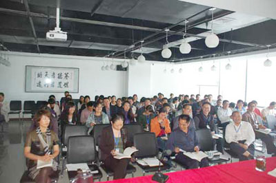

上海谷邦成功举办战略型人才特训及公司管理(技术)人员执行力培训
2011年7月12日， 为期一年半的上海谷邦战略型人才特训班及公司管理（技术）人员执行力培训班开班典礼在上海谷邦总部举行，116位执行力培训班学员及34位特训班学员参加了开班典礼。公司领导到会祝贺并作了重要讲话。

领导指出："为适应公司国内市场深层布局及国际市场区域布点的全球化发展和公司职业化、现代化内部管理方式变革的客观需要，满足公司未来集团化运营模式对人才综合素质的高标准要求，切实满足公司快速发展对高级管理人员的迫切需求，防止因高层人员短缺等问题导致公司丧失历史性发展机遇。公司决定抓住机遇开展战略性人才特别训练班以及公司管理（技术）人员执行力培训班，旨在通过培训，确保参训人员能够结合实际工作岗位进一步提升其全局意识、市场意识、岗位意识和绩效意识，通过拓展其全球视野、行业视野和战略视野，切实增强员工对公司的忠诚度和工作创业的事业心和责任感，提高其决策水平、领导水平、组织管理能力和沟通协调能力，为上海谷邦的战略转型及百年品牌奠定坚实的人才基础。"
本次培训采取自学与辅导相结合的方法进行。自学时要求员工正确处理工作与学习的关系，立足岗位，在工作中学习，在学习中工作，做到按进度学习，学以致用，理论与实践相结合；辅导时采取集训、诊断、演练、评估等多种方式相结合的新的辅导方法，同时采取互动式、启发式等新型的授课方式，力求达到预期的培训目标。